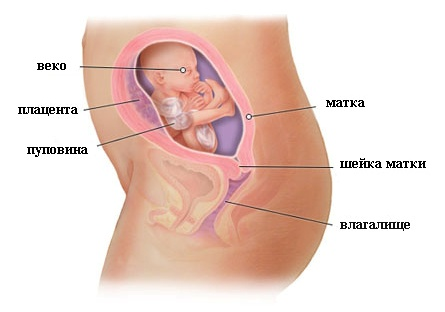
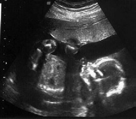
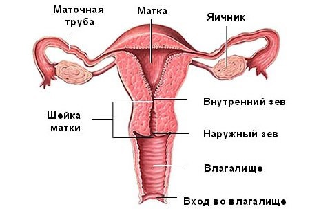

20 неделя беременности

Двадцатая неделя – самое чудесное время, так называемый, экватор. Середина беременности, когда животик уже замечен и почти не мешает, когда все замечают, как хорошо выглядит беременная.
Длина малыша: 20 см.
Вес малыша: 300 г.
Судя по результатам измерений, вы могли подумать, что малыш очень сильно вырос за последнюю неделю. Этот дополнительный рост не является фактическим ростом. Все объясняется тем, что до 19 недели длина вашего малыша измеряется от макушки до копчика. Длина его ног не учитывается в первые 19 недель, поскольку они поджаты, и их длина не может быть точно измерена. После 20 недель в рост ребенка включают длину его ног, и теперь измерение ребенка производят от головы до ступней.
Теперь крошечный человечек уже имеет волосики на голове и малюсенькие ноготки на пальчиках рук и ног. Кроха уже сжимает и разжимает маленькие пальчики рук, кувыркается, играет пуповиной, сосет пальчик, закрывает ручками лицо, зевает.
Его кожа становится толще, а сальные железы вырабатывают восковидный секрет, который называется первородной смазкой. Она сохранится вплоть до самых родов и будет удерживаться на коже первородным пушком.
Врач может предложить послушать сердцебиение малыша при помощи электронного аппарата или звуковой трубки.
Малышу теперь характерен более упорядоченный режим сна, и вам может даже стать известно об этом – особенно если учесть, что большинство малышей активизируются, когда мама как раз собралась уснуть.
На этой стадии развития малыша большинство поступающей ему энергии трансформируется в набираемую им массу тела.
Плацента достигла своей максимальной толщины и сейчас активно снабжает плод всеми требуемыми питательными веществами, удаляя продукты его жизнедеятельности.
Внутриутробное развитие плода на 20 неделе беременности
ВАШ ОРГАНИЗМ
Матка поднимается все выше, а живот становится круглее и больше. Может, как пуговичка, немного выпирать пупок. Могут беспокоить некоторые затруднения в дыхании, так как притесняются свободные движения в легких.
Мама почувствует облегчение только тогда, когда плод опустится глубоко в полость таза, что случается непосредственно перед родами.
Перепады настроения у вас, вероятно, к настоящему времени стали гораздо реже и менее драматичными, а это значит, что вы относитесь более спокойно к переменам, происходящим в вашем организме.
Несмотря на некоторый растущий дискомфорт, вы сейчас гораздо лучше ощущаете развитие своего малыша, и это приносит определенное удовлетворение от текущего состояния беременности. Вы можете заметить, что на движения малыша может оказывать влияние ваш голос. Пойте, разговаривайте с малышом и попросите партнера делать тоже самое.
Как ни неприятно, но во время беременности у вас могут выскочить прыщи. Они могут появиться практически в любом месте у вас на теле, но начнут пропадать и исчезнут совсем после родов.
УЗИ на 20 неделе беременности
ЗДОРОВЫЕ СОВЕТЫ
Теперь, на полпути к окончанию беременности, самое подходящее время начать выбирать вместе с партнером имя для ребенка. Если выясните пол ребенка, вы тем самым сузите поле выбора. Если же нет, составьте перечень подходящих, на ваш взгляд, женских и мужских имен.
Нежный массаж, сделанный вашим партнером, может частично снять дискомфорт в спине.
Вам по-прежнему следует спать на левом боку, чтобы обеспечить оптимальное кровообращение.
Пейте больше воды и располагайте ноги на возвышении, когда отдыхаете по вечерам, чтобы снять отечность.
Сейчас самое выгодное время, чтобы заниматься гимнастикой или физкультурой. Это не повредит, а даже наоборот. При физических упражнениях нормализуется кровообращение, уменьшаются боли в спине, улучшается общее самочувствие. Физические нагрузки помогут подготовить организм непосредственно к родам и укрепить иммунную систему. Беременным женщинам рекомендованы не все физические упражнения. В Интернете можно найти четкие описания и противопоказания.
Не стоит игнорировать малейшие изменения в организме на данном сроке беременности. Следует не забывать их фиксировать.
Если еще не выбраны курсы для будущих родителей, то сейчас – самое время этим заняться. Сейчас женщине интересны шевеления малыша, а также его внутриутробное развитие. Следует выбрать школу, в которой можно найти единомышленников, и, самое главное, – специалистов. Они будут готовы проконсультировать мамочку по важным вопросам.
При посещении занятий и тренингов можно будет узнать о психологических проблемах, преследующих беременную женщину. Это будет залогом хорошей профилактики осложнений при родах.
Полученная на таких курсах информация о физиологии развития беременности будет являться наиважнейшей.
Мамочка не должна оставлять без внимания вопросы, которые ее волнуют. Вынашивание ребенка, взаимоотношения с родственниками в связи с воспитанием будущего мальчика или девочки, психологическое общение в семье – такие вопросы не должны оставаться без ответа. Их можно и нужно обсуждать с врачами.
ОПАСНОСТИ
Мамочкам нужно опасаться выкидыша, который может случиться вследствие истмико-цервикальной недостаточности.
К сожалению, на 20 неделе ребеночек мал и незрел, и не сможет выжить в случае опасной ситуации. Повышенный тонус матки и тянущая боль внизу живота – это угроза.
Еще один повод обратиться к врачу – боли в животе, этого не должно быть на таком сроке беременности. А также не должно быть и повышенной температуры тела, влагалищные выделения должны быть умеренными и не иметь резкого запаха.
Может возникнуть ситуация, когда врач порекомендует наложить шов на шейку матки (для устранения угрозы преждевременных родов) или специальное устройство, которое удержит ее в правильном положении и поможет ограничить двигательную активность. Женщине обязательно придется немного полежать в стационаре.
Что такое истмико-цервикальная недостаточность, и чем она опасна?
ИЦН при беременности встречается сравнительно редко, лишь у 1-9% женщин.
Что же скрывается за этим словосочетанием?
Чтобы понять, что это такое, и какие процессы приводят к этой патологии, нужно понять строение матки.
Она состоит из тела – мышечного полого мешка, в котором вынашивается ребенок, и шейки, закрывающей вход в матку. Совместно с перешейком шейка матки образовывает первую часть родовых путей. И шейка, и перешеек состоят из двух видов тканей: соединительной и мышечной. Причем мышечная ткань сконцентрирована в верхней части шейки, у внутреннего зева матки. Мышцы образуют кольцо-сфинктер, которое не выпускает из матки плодное яйцо раньше времени.
Однако в некоторых случаях это самое мышечное кольцо оказывается неспособно выдержать увеличивающуюся нагрузку: вес плода и околоплодных вод, тонус матки. В результате под давлением плодного яйца шейка матки укорачивается и раскрывается раньше времени.
Чем же опасно ИЦН при беременности?
Во-первых, раскрытая шейка матки провоцирует опускание плода, плодная оболочка попадает в канал матки. В этот период она может вскрыться буквально от любого резкого движения.
Во-вторых, влагалище женщины никогда не бывает стерильным. В нем всегда имеются различные бактерии, а зачастую и инфекции. В итоге происходит инфицирование плодной оболочки. В этом месте она истончается и может порваться просто под весом околоплодных вод.
Вскрытие плодного пузыря и излитие вод вызывают начало родовой деятельности. Таким образом, ИЦН становится одной из самых частых причин выкидышей на поздних сроках (до 22 недель), или преждевременных родов (с 22 до 37 недель).
Как правило, ИЦН развивается на сроке от 16 до 27 недель. В редких случаях патология может развиться раньше, даже на 11 неделе.
Выделяют травматическую и функциональную недостаточность.
Травматическая ИЦН развивается в том случае, если мышцы шейки матки были травмированы каким либо образом.
Из-за чего могут возникнуть травмы? Любая процедура, связанная с расширением шейки матки чревата ее травмой. Это и аборты, и выскабливания после выкидышей, и диагностические выскабливания. Кроме того, мышцы шейки матки могут быть травмированы в ходе родов, а также после ЭКО (экстракорпорального оплодотворения).
В этом случае механизм образования ИЦН при беременности крайне прост: на месте любой травмы возникает рубец из соединительной ткани. В отличие от мышечной, соединительная ткань не способна растягиваться, это и становится причиной недостаточности.
С функциональной ИЦН все несколько сложнее. Ее причины могут крыться в разных факторах. Однако чаще всего данный вид недостаточности связан с гормональными сбоями. Как правило, речь идет о недостатке прогестерона, или же об избытке мужских гормонов – андрогенов. Кстати, это вторая по частоте причина ИЦН.
В этом случае недостаточность начинает развиваться на ранних сроках, примерно с 11 недели беременности. Связанно это с тем, что в это время начинает работать поджелудочная железа плода. Она вырабатывает мужские гормоны, и, если у матери их количество повышено или имеется чувствительность к ним, последствия не замедлят сказаться: мышцы в шейке матки ослабевают, и шейка раскрывается.
ИЦН может развиться и по более прозаичным причинам. Например, в том случае, если беременность многоплодная или же имеет место многоводие. В этом случае нагрузка на шейку матки больше, чем при обычной беременности, что также может привести к недостаточности. Не стоит забывать и о патологиях развития матки.
Симптомы, диагностика и лечение ИЦН
К огромному сожалению, истмико-цервикальная недостаточность протекает бессимптомно. Лишь в некоторых случаях ИЦН на ранних сроках может проявлять себя примерно также как угрожающий выкидыш: мажущими кровянистыми выделениями, тянущими болями в животе, распирающие ощущения во влагалище. Обычно же симптомы у ИЦН при беременности отсутствуют. Диагностировать ИЦН очень сложно.
Для этого необходимо регулярно посещать гинеколога и проводить вагинальный осмотр каждое посещение. К сожалению, многие врачи считают, что осматривать родовые пути достаточно при постановке на учет и уже в роддоме перед родами. В итоге женщина посещает консультацию, однако врач проводит лишь измерение веса, размера живота и артериального давления. В таких условиях о диагнозе ИЦН при беременности женщина может узнать, когда уже будет поздно. Конечно же, если у женщины ранее уже наблюдалась данная патология, за её здоровьем будут наблюдать куда более пристально.
Но вы можете настоять на том, чтобы вагинальный осмотр проводился каждый раз при посещении гинеколога. Впрочем, в распоряжении врача только его собственные ощущения и гинекологическое зеркало. И если внешний зев матки еще не открыт, гинеколог может только предположить ИЦН, а более точно поставить диагноз при помощи ультразвукового исследования. Исследование проводится вагинальным датчиком.
Только после того, как будет точно установлен диагноз, а также причина патологии, можно приступать к лечению ИЦН при беременности. Без знания причины, как и в любом другом случае, подобрать адекватное лечение не получится.
Любая патология в течение беременности требует не только своевременного лечения, но и соблюдения того или иного режима. Истмико-цервикальная недостаточность не исключение.
Женщине с этой патологией необходимо отказаться от лишних физических нагрузок, исключить половые контакты, побольше лежать. Пусть домашние дела за вас делают близкие. Не забывайте своевременно принимать все назначенные вам препараты. К счастью, истмико-цервикальная недостаточность встречается все-таки достаточно редко. А современная медицина позволяет решить и эту проблему, причем без вреда для женщины и ее малыша. Поэтому данного диагноза бояться не стоит. Главное, соблюдать все рекомендации вашего врача.
19 неделя 21 неделя